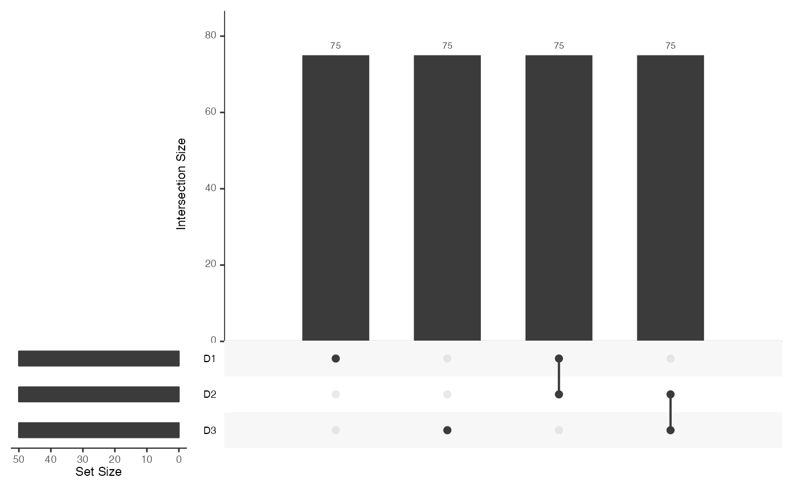
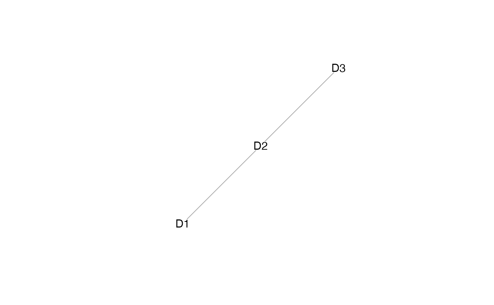
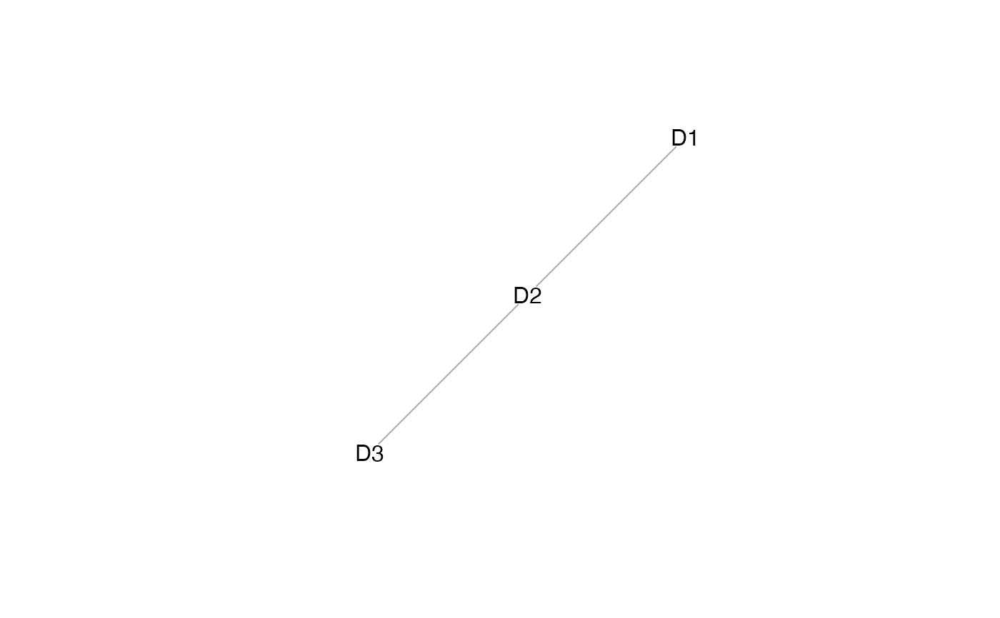

R/stabMap.R
StabMap.RdstabMap performs mosaic data integration by first building a mosaic data topology, and for each reference dataset, traverses the topology to project and predict data onto a common principal component (PC) or linear discriminant (LD) embedding.
stabMap(
assay_list,
labels_list = NULL,
reference_list = sapply(names(assay_list), function(x) TRUE, simplify = FALSE),
reference_features_list = lapply(assay_list, rownames),
reference_scores_list = NULL,
ncomponentsReference = 50,
ncomponentsSubset = 50,
suppressMessages = TRUE,
projectAll = FALSE,
restrictFeatures = FALSE,
maxFeatures = 1000,
plot = TRUE,
scale.center = TRUE,
scale.scale = TRUE
)A list of data matrices with rownames (features) specified.
(optional) named list containing cell labels
Named list containing logical values whether the data matrix should be considered as a reference dataset, alternatively a character vector containing the names of the reference data matrices.
List of features to consider as reference data (default is all available features).
Named list of reference scores (default NULL). If provided, matrix of cells (rows with rownames given) and dimensions (columns with colnames given) are used as the reference low-dimensional embedding to target, as opposed to performing PCA or LDA on the input reference data.
Number of principal components for embedding reference data, given either as an integer or a named list for each reference dataset.
Number of principal components for embedding query data prior to projecting to the reference, given either as an integer or a named list for each reference dataset.
Logical whether to suppress messages (default TRUE).
Logical whether to re-project reference data along with query (default FALSE).
logical whether to restrict to features used in dimensionality reduction of reference data (default FALSE). Overall it's recommended that this be FALSE for single-hop integrations and TRUE for multi-hop integrations.
Maximum number of features to consider for predicting principal component scores (default 1000).
Logical whether to plot mosaic data UpSet plot and mosaic data topology networks (default TRUE).
Logical whether to re-center data to a mean of 0 (default FALSE).
Logical whether to re-scale data to standard deviation of 1 (default FALSE).
matrix containing common embedding with rows corresponding to cells, and columns corresponding to PCs or LDs for reference dataset(s).
set.seed(2021)
assay_list = mockMosaicData()
lapply(assay_list, dim)
#> $D1
#> [1] 150 50
#>
#> $D2
#> [1] 150 50
#>
#> $D3
#> [1] 150 50
#>
# specify which datasets to use as reference coordinates
reference_list = c("D1", "D3")
# specify some sample labels to distinguish using linear discriminant
# analysis (LDA)
labels_list = list(
D1 = rep(letters[1:5], length.out = ncol(assay_list[["D1"]]))
)
# examine the topology of this mosaic data integration
mosaicDataUpSet(assay_list)
#> Loading required package: UpSetR

plot(mosaicDataTopology(assay_list))

# stabMap
out = stabMap(assay_list,
reference_list = reference_list,
labels_list = labels_list,
ncomponentsReference = 20,
ncomponentsSubset = 20)
#> Loading required package: scater
#> Loading required package: SingleCellExperiment
#> Loading required package: SummarizedExperiment
#> Loading required package: MatrixGenerics
#> Loading required package: matrixStats
#>
#> Attaching package: ‘MatrixGenerics’
#> The following objects are masked from ‘package:matrixStats’:
#>
#> colAlls, colAnyNAs, colAnys, colAvgsPerRowSet, colCollapse,
#> colCounts, colCummaxs, colCummins, colCumprods, colCumsums,
#> colDiffs, colIQRDiffs, colIQRs, colLogSumExps, colMadDiffs,
#> colMads, colMaxs, colMeans2, colMedians, colMins, colOrderStats,
#> colProds, colQuantiles, colRanges, colRanks, colSdDiffs, colSds,
#> colSums2, colTabulates, colVarDiffs, colVars, colWeightedMads,
#> colWeightedMeans, colWeightedMedians, colWeightedSds,
#> colWeightedVars, rowAlls, rowAnyNAs, rowAnys, rowAvgsPerColSet,
#> rowCollapse, rowCounts, rowCummaxs, rowCummins, rowCumprods,
#> rowCumsums, rowDiffs, rowIQRDiffs, rowIQRs, rowLogSumExps,
#> rowMadDiffs, rowMads, rowMaxs, rowMeans2, rowMedians, rowMins,
#> rowOrderStats, rowProds, rowQuantiles, rowRanges, rowRanks,
#> rowSdDiffs, rowSds, rowSums2, rowTabulates, rowVarDiffs, rowVars,
#> rowWeightedMads, rowWeightedMeans, rowWeightedMedians,
#> rowWeightedSds, rowWeightedVars
#> Loading required package: GenomicRanges
#> Loading required package: stats4
#> Loading required package: BiocGenerics
#>
#> Attaching package: ‘BiocGenerics’
#> The following objects are masked from ‘package:igraph’:
#>
#> normalize, path, union
#> The following objects are masked from ‘package:stats’:
#>
#> IQR, mad, sd, var, xtabs
#> The following objects are masked from ‘package:base’:
#>
#> Filter, Find, Map, Position, Reduce, anyDuplicated, append,
#> as.data.frame, basename, cbind, colnames, dirname, do.call,
#> duplicated, eval, evalq, get, grep, grepl, intersect, is.unsorted,
#> lapply, mapply, match, mget, order, paste, pmax, pmax.int, pmin,
#> pmin.int, rank, rbind, rownames, sapply, setdiff, sort, table,
#> tapply, union, unique, unsplit, which.max, which.min
#> Loading required package: S4Vectors
#>
#> Attaching package: ‘S4Vectors’
#> The following objects are masked from ‘package:base’:
#>
#> I, expand.grid, unname
#> Loading required package: IRanges
#> Loading required package: GenomeInfoDb
#> Loading required package: Biobase
#> Welcome to Bioconductor
#>
#> Vignettes contain introductory material; view with
#> 'browseVignettes()'. To cite Bioconductor, see
#> 'citation("Biobase")', and for packages 'citation("pkgname")'.
#>
#> Attaching package: ‘Biobase’
#> The following object is masked from ‘package:MatrixGenerics’:
#>
#> rowMedians
#> The following objects are masked from ‘package:matrixStats’:
#>
#> anyMissing, rowMedians
#> Loading required package: scuttle
#> Loading required package: ggplot2
#> treating "D1" as reference
#> generating embedding for path with reference "D1": "D1"
#> generating embedding for path with reference "D1": "D2" -> "D1"
#> generating embedding for path with reference "D1": "D3" -> "D2" -> "D1"
#> Loading required package: MASS
#> labels provided for "D1", adding LD components
#> Loading required package: Matrix
#>
#> Attaching package: ‘Matrix’
#> The following object is masked from ‘package:S4Vectors’:
#>
#> expand
#> generating embedding for path with reference "D1": "D1"
#> generating embedding for path with reference "D1": "D2" -> "D1"
#> generating embedding for path with reference "D1": "D3" -> "D2" -> "D1"
#> treating "D3" as reference
#> generating embedding for path with reference "D3": "D3"
#> generating embedding for path with reference "D3": "D2" -> "D3"
#> generating embedding for path with reference "D3": "D1" -> "D2" -> "D3"

head(out)
#> D1_PC1 D1_PC2 D1_PC3 D1_PC4 D1_PC5 D1_PC6
#> D1_cell_1 2.6270969 3.1709928 4.0506445 -3.609130459 -1.43056606 2.5013943
#> D1_cell_2 -4.5057485 -0.5752083 0.8340238 -1.014823114 -0.63151929 1.4937527
#> D1_cell_3 0.6226309 1.5472376 2.6103086 -0.018643114 2.81536539 1.0940201
#> D1_cell_4 -4.2263350 2.0444978 -0.5356968 -3.453648014 -2.92566847 -0.2716939
#> D1_cell_5 3.8947019 -0.9106738 -3.6039996 0.004893567 2.30739074 0.3341585
#> D1_cell_6 2.0177813 -3.5252245 -4.1753395 -1.148906355 -0.05251646 -1.8700432
#> D1_PC7 D1_PC8 D1_PC9 D1_PC10 D1_PC11 D1_PC12
#> D1_cell_1 -0.24764751 0.5873167 -2.3067376 3.2015090 -0.4526165 -1.2460048
#> D1_cell_2 -0.25444661 -0.7616007 -2.4968763 0.1378678 2.8105718 4.8446448
#> D1_cell_3 0.03710635 1.5760269 -0.3924504 1.1906449 -3.6871124 -3.7681881
#> D1_cell_4 -1.69233366 0.7617611 4.8401743 -2.0105921 -1.1875114 -1.5079628
#> D1_cell_5 -4.31581421 0.9061911 -0.9850855 1.2802993 -1.6064210 0.3283823
#> D1_cell_6 3.75335901 -0.4612008 -2.3790983 1.2309207 -2.1421033 -0.9491438
#> D1_PC13 D1_PC14 D1_PC15 D1_PC16 D1_PC17 D1_PC18
#> D1_cell_1 3.1375299 -4.378068 -3.444451 -1.78898621 -2.2372443 0.7444908
#> D1_cell_2 0.7939143 -2.721340 -0.377106 -0.09414872 1.4999731 -4.7338701
#> D1_cell_3 -0.4814744 3.724470 -1.594450 -1.49311501 1.9097362 -1.1429568
#> D1_cell_4 3.0741564 -1.146310 1.966764 2.49615083 -1.8948504 -0.2249584
#> D1_cell_5 0.2501072 1.337008 1.229278 -2.45020979 0.6301791 -1.0275208
#> D1_cell_6 -1.9202294 1.207617 2.005668 -0.81970304 -1.8491049 0.7083563
#> D1_PC19 D1_PC20 D1_LD1 D1_LD2 D1_LD3 D1_LD4
#> D1_cell_1 -1.2420356 -2.6537241 -0.3927678 -1.674139 -1.1392196 0.01773841
#> D1_cell_2 -1.5838926 -0.7553307 1.2724435 0.793653 1.1154764 1.00840563
#> D1_cell_3 2.0095487 -1.4511702 -1.4536953 1.599853 -0.9361014 0.06013095
#> D1_cell_4 0.2146626 1.1997077 1.1922330 -1.336241 -0.0218638 0.50445480
#> D1_cell_5 -2.5546764 -2.1599807 -1.8890462 -1.191700 -0.1356699 0.66198248
#> D1_cell_6 1.4360245 -0.1285014 0.1478705 -1.261443 0.7427569 -0.93665942
#> D3_PC1 D3_PC2 D3_PC3 D3_PC4 D3_PC5 D3_PC6
#> D1_cell_1 5.092261 8.2508095 3.425652 0.4690347 1.364696 -2.321035
#> D1_cell_2 12.595954 0.2080145 -14.737667 6.5019653 2.625458 -5.032633
#> D1_cell_3 -11.306183 -1.9951360 19.052222 -7.5799141 -4.386633 7.594893
#> D1_cell_4 -23.365322 -2.8256679 6.699823 -3.8222231 -12.100091 2.068094
#> D1_cell_5 -3.486373 1.6333765 12.325701 -6.0603755 6.831653 1.613624
#> D1_cell_6 -4.529260 2.8107633 5.415550 12.4524329 -4.605054 3.963515
#> D3_PC7 D3_PC8 D3_PC9 D3_PC10 D3_PC11 D3_PC12
#> D1_cell_1 3.8764340 4.0883439 2.428021 -0.7772289 -2.710610 -2.2746468
#> D1_cell_2 3.6140777 6.0370403 -9.409367 -7.6498222 7.823002 -0.9906758
#> D1_cell_3 -2.5210342 -4.6332347 9.397575 12.0328986 -10.564131 2.8742841
#> D1_cell_4 -0.1166194 0.9251444 12.568800 9.0282004 -1.519511 -0.4224119
#> D1_cell_5 -7.9823773 -5.9523524 9.895687 3.1960450 -12.193279 0.4332627
#> D1_cell_6 9.7299558 3.6624210 -2.562558 -2.4382349 2.061842 3.2577990
#> D3_PC13 D3_PC14 D3_PC15 D3_PC16 D3_PC17 D3_PC18
#> D1_cell_1 0.8287263 -2.576192 -1.231400 -2.2388540 -1.976509 5.664110
#> D1_cell_2 -6.5423054 7.724876 4.553024 14.3713652 8.397916 -2.623389
#> D1_cell_3 7.2103276 -13.081510 -4.107556 -17.0461773 -10.751769 1.107053
#> D1_cell_4 9.1727966 3.286651 -11.690377 -4.8886036 6.230477 2.364460
#> D1_cell_5 1.9820477 -14.167346 1.655577 -9.5230822 -12.926575 2.182262
#> D1_cell_6 3.3057180 14.400471 -8.922536 0.4140916 -4.918429 -2.660315
#> D3_PC19 D3_PC20
#> D1_cell_1 1.6945880 2.072783
#> D1_cell_2 -4.6158786 2.636875
#> D1_cell_3 7.0317033 -5.098531
#> D1_cell_4 -0.6198571 14.316522
#> D1_cell_5 7.6733032 -10.683882
#> D1_cell_6 -2.0122076 5.141252